Most Popular
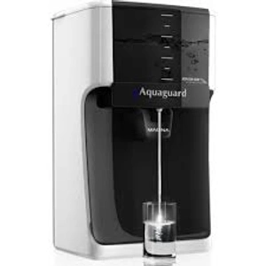
Aquaguard Service
Expert Aquaguard RO repair & maintenance
from ₹399
- All Aquaguard & Eureka Forbes models
- Genuine membrane & filter sets
- Same-day doorstep service in 30-60 min
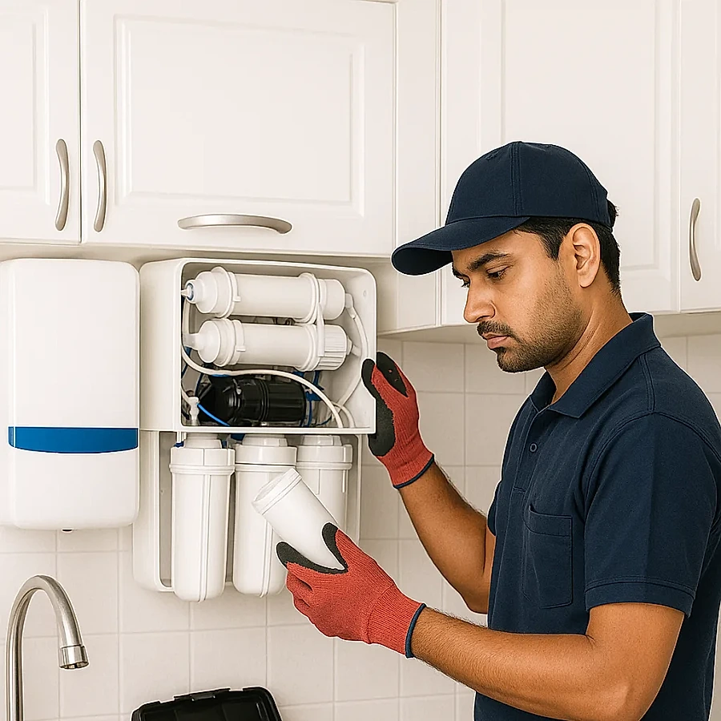
Doorstep service in 30–60 min • ₹399 visit charge • All brands
Pure Flow delivers trusted doorstep water purifier service in Visakhapatnam, headquartered at 100 Feet Road, Madhurawada. From routine filter cleaning and RO membrane replacement to emergency breakdown repairs, our certified technicians service Aquaguard, Kent, AO Smith, Pureit, Havells, Livpure and all leading brands within 30 to 60 minutes.
Brands We Service
Certified doorstep repair and service for every major water purifier brand with 100% genuine parts.

Expert Aquaguard RO repair & maintenance
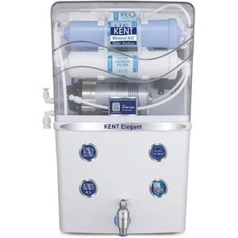
Complete Kent RO repair & filter service
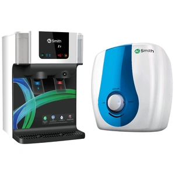
Certified AO Smith RO repair & AMC
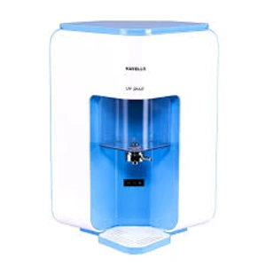
Expert Havells RO maintenance in Vizag
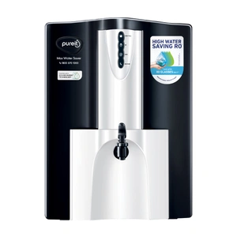
Reliable Pureit RO filter & repair service
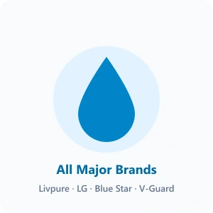
Livpure, LG, Blue Star, V-Guard & more
From high-TDS membrane replacement and multi-stage filter renewals to precision digital TDS calibration, we provide transparent doorstep solutions.
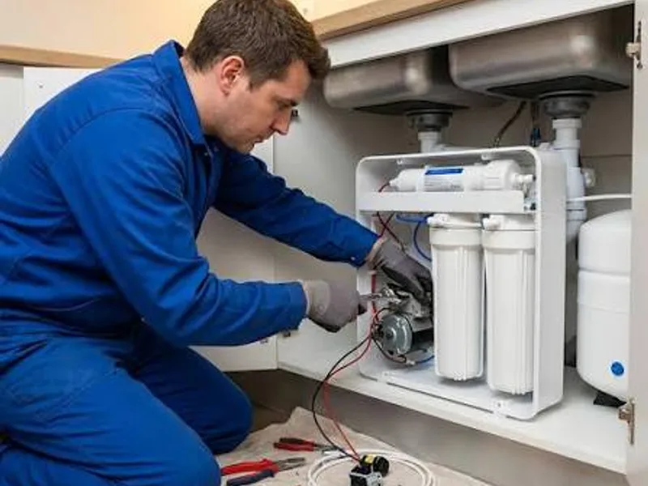
Restores 95%+ TDS reduction and high pure water output using 100% genuine factory-sealed branded membranes.
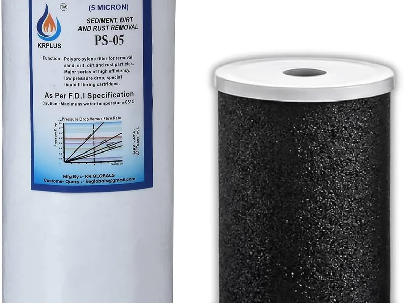
Full 5-stage renewal: 5-micron spun sediment pre-filter, activated carbon block, and mineral post-carbon cartridges.
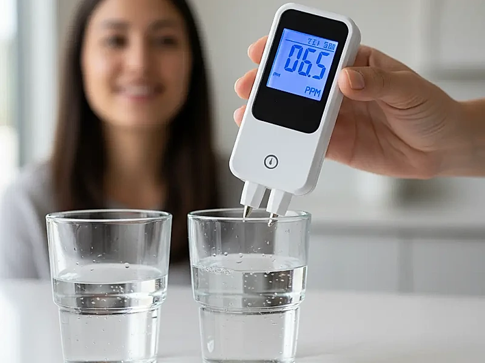
Accurate digital measurement of input tap/borewell water vs purified output to diagnose filtration efficiency on-site.
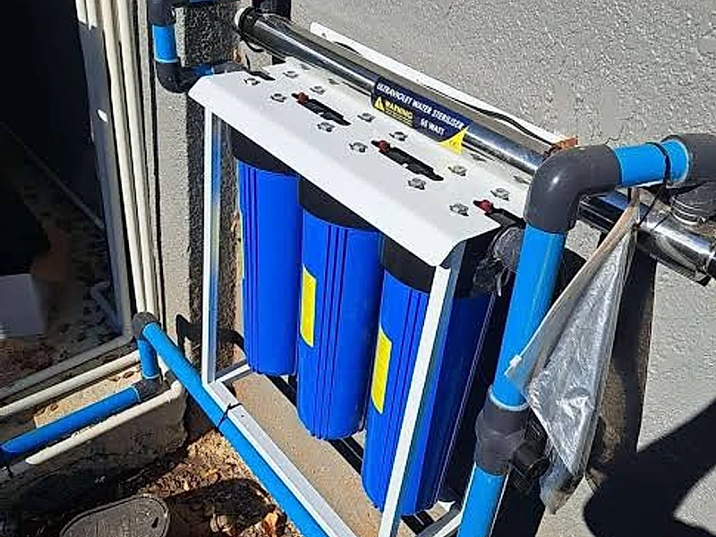
Professional wall-mounting, inlet valve plumbing, high-pressure piping, and damage-free relocation during home shifting.
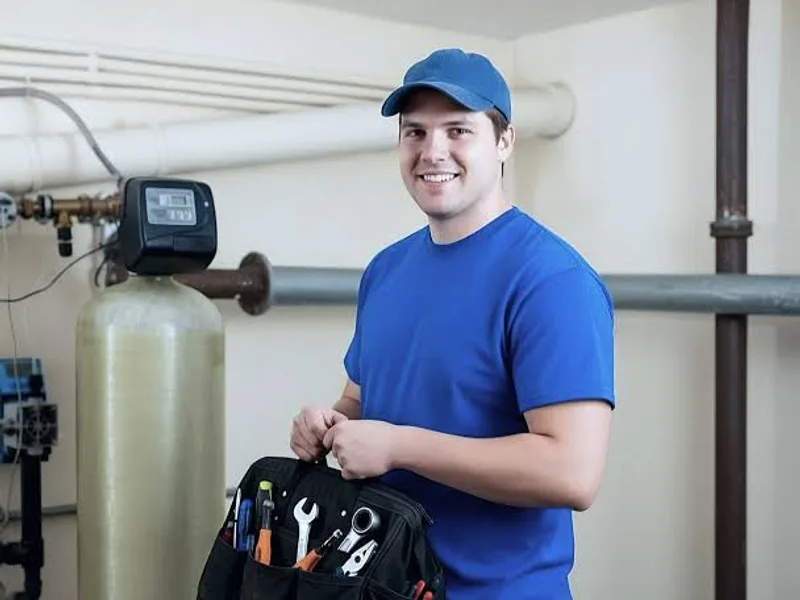
Fast doorstep diagnosis within 30–60 minutes. Certified technicians troubleshoot pump motor, power adapter, and water flow issues.
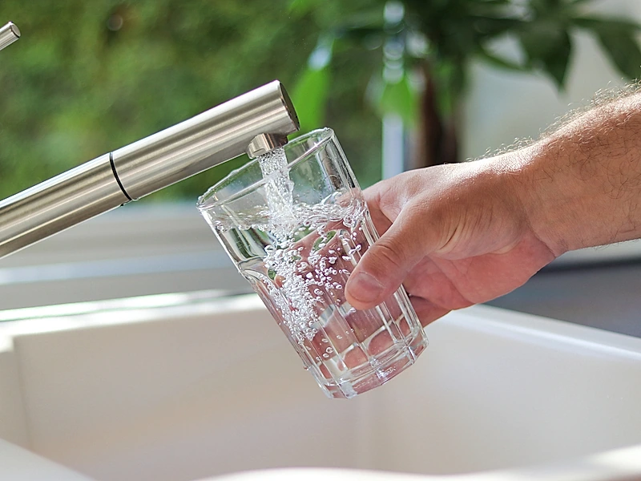
Year-round pure drinking water assurance for your family with scheduled filter renewals and unlimited emergency repair visits.
Over 6–12 months, sediment, rust, and chlorine choke your RO cartridges. Drag the slider to see how regular replacement restores pure water.
Technician at your door, same day guaranteed
Honest flat fee, parts quoted upfront before work
Brand-approved filters, membranes & UV lamps
Most issues fixed in a single visit
Call us, WhatsApp, or fill our quick online form. Tell us your brand, issue, and preferred time slot.
Book Now →A certified technician arrives within 30–60 minutes with all tools and genuine spare parts ready.
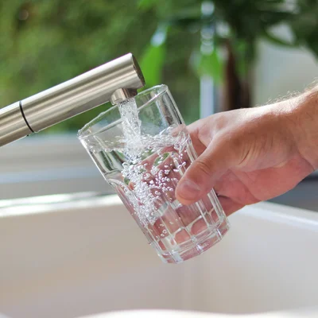
Your purifier is repaired, tested, and cleared. Enjoy clean, safe drinking water again the same day.
"Excellent service! The technician arrived within 45 minutes and fixed my Kent RO's low water pressure issue in no time. Very professional and affordable. Highly recommended!"
"My Aquaguard stopped working and Pure Flow sent a technician in under an hour. He replaced the membrane and service was done! Great pricing and genuine parts used."
"Took the AMC plan for my AO Smith purifier and it has been amazing. Two scheduled services done on time, discounts on parts. Best investment for my family's health!"
"Called at 8 AM and the technician was here by 9 AM. My Pureit germkill kit was replaced and the purifier is working perfectly. Very satisfied with the service and professionalism."
"Pure Flow fixed my Havells RO leakage issue quickly. Transparent pricing — they told me the cost before starting work. No hidden charges. Will definitely call again."
"The service team is very responsive and professional. My Kent RO stopped purifying properly and they diagnosed and fixed a TDS controller issue quickly. Excellent experience!"
Our RO water purifier service starts at ₹399 visit charge across all areas of Visakhapatnam. Routine sediment and carbon filter replacements cost ₹699, genuine high-TDS RO membrane replacement is ₹1,499, and our Annual Maintenance Contract (AMC) is ₹1,999/year. All parts and prices are quoted upfront before any work starts — no hidden fees.
Our certified mobile technicians reach your doorstep within 30 to 60 minutes across all major Visakhapatnam localities including Akkayyapalem (20-30 min), MVP Colony, Seethammadhara, Maddilapalem, Gajuwaka, and Madhurawada. We operate 7 AM to 10 PM, 7 days a week.
We service all leading domestic and commercial brands including Aquaguard, Kent, AO Smith, Pureit, Havells, Livpure, LG, Blue Star, and V-Guard. Our engineers carry genuine factory-sealed filters, membranes, and electrical components for both current and discontinued models.
Groundwater in Visakhapatnam coastal and industrial pockets (such as Gajuwaka, Madhurawada, and MVP Colony) typically ranges from 400 to 1,500+ ppm TDS with high mineral hardness. An RO water purifier is strongly recommended whenever total dissolved solids exceed 300 ppm to filter out dissolved heavy metals, excess chlorides, and scaling salts.
In Visakhapatnam, the external spun sediment pre-filter should be replaced every 3 to 6 months due to local borewell silt. Pre-carbon and post-carbon cartridges should be renewed every 8 to 12 months, and the RO membrane should be changed every 18 to 24 months, verified by our digital TDS test.
Yes, we offer emergency same-day RO repair across Vizag. If your purifier is leaking heavily, vibrating with a loud humming noise, or has completely stopped dispensing drinking water, call or WhatsApp +91 91801 06453 for an immediate priority dispatch.
Our Annual Maintenance Contract (AMC) at ₹1,999/year provides 2 scheduled comprehensive preventive services, free periodic replacement of sediment and carbon filters, unlimited breakdown repair visits, zero labor charges, and priority technician dispatch within 30 minutes.
Yes, 100%. We source exclusively brand-approved, food-grade genuine filter cartridges, high-rejection TFC RO membranes, and certified UV lamps from authorized distributors. Every component replacement is backed by a 30-day service warranty.
We cover the entire Greater Visakhapatnam region: Akkayyapalem, Seethammadhara, MVP Colony, Maddilapalem, Gajuwaka, NAD Junction, Dwaraka Nagar, Madhurawada, Rushikonda, Gopalapatnam, Pendurthi, Ramachandra Nagar, Siripuram, Gurudwara, Waltair, Murali Nagar, and Kancharapalem.
We accept all convenient payment modes upon completion of service: UPI (Google Pay, PhonePe, Paytm, BHIM via technician QR code) and Cash. We hand over an itemized digital or physical service receipt before receiving payment.
Yes, our mobile technicians carry replacement booster pumps, high-pressure switches, quick-connect elbow fittings, and auto-shutoff valves. Over 95% of vibration and leak issues are resolved on the spot during our first visit.
GVMC municipal water usually has moderate TDS (150–250 ppm). For municipal tap water, an RO system with an active TDS controller or a UV+UF purifier preserves healthy minerals while eradicating aging pipeline rust, chlorine, and pathogens. We test your specific tap water on-site and recommend the safest setup.
Your service request has been sent via WhatsApp. Our team will confirm your appointment shortly.
Book Another ServicePure Flow provides certified RO water purifier service across Visakhapatnam. Fast doorstep repairs, genuine spare parts, and transparent ₹399 pricing — covering all major residential localities.
Welcome to Pure Flow, Visakhapatnam’s trusted independent RO service and repair partner based at 100 Feet Road, Madhurawada. We specialize in fast doorstep solutions for every major water purifier brand including Aquaguard, Kent, AO Smith, Pureit, Havells, and Livpure. Whether your drinking water tastes bitter, flows at a trickle, or leaks onto the kitchen slab, our certified mobile technicians reach your doorstep within 30 to 60 minutes with genuine spare parts.
Visakhapatnam’s unique coastal-industrial water chemistry requires disciplined filter maintenance:
• External Spun Pre-Filter: Replace every 3 to 6 months to shield expensive internal stages from borewell mud and silt.
• Activated Carbon & Sediment Filters: Renew every 8 to 12 months to protect the core RO membrane from free chlorine degradation.
• RO Membrane: Replace every 18 to 24 months, verified by digital TDS meter rejection comparison.
• Storage Tank Sanitization: Clean and disinfect every 6 months to prevent bacterial film buildup.
We pride ourselves on zero hidden fees. Doorstep inspection is a flat ₹399. Complete multi-stage filter replacement starts from ₹699, high-TDS RO membrane replacement is ₹1,499, and our comprehensive Annual Maintenance Contract (AMC) is just ₹1,999/year with full labor coverage and 2 scheduled services included. Call or WhatsApp +91 91801 06453 for same-day service from 7:00 AM to 10:00 PM.